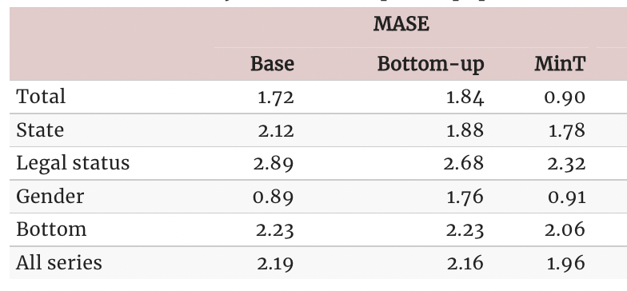

!pip install hierarchicalforecast
!pip install -U statsforecast numbaGeographical Aggregation (Prison Population)
Geographical Hierarchical Forecasting on Australian Prison Population Data
In many applications, a set of time series is hierarchically organized. Examples include the presence of geographic levels, products, or categories that define different types of aggregations. In such scenarios, forecasters are often required to provide predictions for all disaggregate and aggregate series. A natural desire is for those predictions to be “coherent”, that is, for the bottom series to add up precisely to the forecasts of the aggregated series.
In this notebook we present an example on how to use HierarchicalForecast to produce coherent forecasts between geographical levels. We will use the Australian Prison Population dataset.
We will first load the dataset and produce base forecasts using an ETS model from StatsForecast, and then reconciliate the forecasts with several reconciliation algorithms from HierarchicalForecast. Finally, we show the performance is comparable with the results reported by the Forecasting: Principles and Practice which uses the R package fable.
You can run these experiments using CPU or GPU with Google Colab.

1. Load and Process Data
The dataset only contains the time series at the lowest level, so we need to create the time series for all hierarchies.
import numpy as np
import pandas as pdY_df = pd.read_csv('https://OTexts.com/fpp3/extrafiles/prison_population.csv')
Y_df = Y_df.rename({'Count': 'y', 'Date': 'ds'}, axis=1)
Y_df.insert(0, 'Country', 'Australia')
Y_df = Y_df[['Country', 'State', 'Gender', 'Legal', 'Indigenous', 'ds', 'y']]
Y_df['ds'] = pd.to_datetime(Y_df['ds'])
Y_df.head()| Country | State | Gender | Legal | Indigenous | ds | y | |
|---|---|---|---|---|---|---|---|
| 0 | Australia | ACT | Female | Remanded | ATSI | 2005-03-01 | 0 |
| 1 | Australia | ACT | Female | Remanded | Non-ATSI | 2005-03-01 | 2 |
| 2 | Australia | ACT | Female | Sentenced | ATSI | 2005-03-01 | 0 |
| 3 | Australia | ACT | Female | Sentenced | Non-ATSI | 2005-03-01 | 5 |
| 4 | Australia | ACT | Male | Remanded | ATSI | 2005-03-01 | 7 |
The dataset can be grouped in the following grouped structure.
hiers = [
['Country'],
['Country', 'State'],
['Country', 'Gender'],
['Country', 'Legal'],
['Country', 'State', 'Gender', 'Legal']
]Using the aggregate function from HierarchicalForecast we can get the full set of time series.
from hierarchicalforecast.utils import aggregateY_df, S_df, tags = aggregate(Y_df, hiers)
Y_df['y'] = Y_df['y']/1e3
Y_df = Y_df.reset_index()Y_df.head()| unique_id | ds | y | |
|---|---|---|---|
| 0 | Australia | 2005-03-01 | 24.296 |
| 1 | Australia | 2005-06-01 | 24.643 |
| 2 | Australia | 2005-09-01 | 24.511 |
| 3 | Australia | 2005-12-01 | 24.393 |
| 4 | Australia | 2006-03-01 | 24.524 |
S_df.iloc[:5, :5]| Australia/ACT/Female/Remanded | Australia/ACT/Female/Sentenced | Australia/ACT/Male/Remanded | Australia/ACT/Male/Sentenced | Australia/NSW/Female/Remanded | |
|---|---|---|---|---|---|
| Australia | 1.0 | 1.0 | 1.0 | 1.0 | 1.0 |
| Australia/ACT | 1.0 | 1.0 | 1.0 | 1.0 | 0.0 |
| Australia/NSW | 0.0 | 0.0 | 0.0 | 0.0 | 1.0 |
| Australia/NT | 0.0 | 0.0 | 0.0 | 0.0 | 0.0 |
| Australia/QLD | 0.0 | 0.0 | 0.0 | 0.0 | 0.0 |
tags{'Country': array(['Australia'], dtype=object),
'Country/State': array(['Australia/ACT', 'Australia/NSW', 'Australia/NT', 'Australia/QLD',
'Australia/SA', 'Australia/TAS', 'Australia/VIC', 'Australia/WA'],
dtype=object),
'Country/Gender': array(['Australia/Female', 'Australia/Male'], dtype=object),
'Country/Legal': array(['Australia/Remanded', 'Australia/Sentenced'], dtype=object),
'Country/State/Gender/Legal': ['Australia/ACT/Female/Remanded',
'Australia/ACT/Female/Sentenced',
'Australia/ACT/Male/Remanded',
'Australia/ACT/Male/Sentenced',
'Australia/NSW/Female/Remanded',
'Australia/NSW/Female/Sentenced',
'Australia/NSW/Male/Remanded',
'Australia/NSW/Male/Sentenced',
'Australia/NT/Female/Remanded',
'Australia/NT/Female/Sentenced',
'Australia/NT/Male/Remanded',
'Australia/NT/Male/Sentenced',
'Australia/QLD/Female/Remanded',
'Australia/QLD/Female/Sentenced',
'Australia/QLD/Male/Remanded',
'Australia/QLD/Male/Sentenced',
'Australia/SA/Female/Remanded',
'Australia/SA/Female/Sentenced',
'Australia/SA/Male/Remanded',
'Australia/SA/Male/Sentenced',
'Australia/TAS/Female/Remanded',
'Australia/TAS/Female/Sentenced',
'Australia/TAS/Male/Remanded',
'Australia/TAS/Male/Sentenced',
'Australia/VIC/Female/Remanded',
'Australia/VIC/Female/Sentenced',
'Australia/VIC/Male/Remanded',
'Australia/VIC/Male/Sentenced',
'Australia/WA/Female/Remanded',
'Australia/WA/Female/Sentenced',
'Australia/WA/Male/Remanded',
'Australia/WA/Male/Sentenced']}Split Train/Test sets
We use the final two years (8 quarters) as test set.
Y_test_df = Y_df.groupby('unique_id').tail(8)
Y_train_df = Y_df.drop(Y_test_df.index)Y_test_df = Y_test_df.set_index('unique_id')
Y_train_df = Y_train_df.set_index('unique_id')2. Computing base forecasts
The following cell computes the base forecasts for each time series in Y_df using the ETS model. Observe that Y_hat_df contains the forecasts but they are not coherent.
from statsforecast.models import ETS
from statsforecast.core import StatsForecastfcst = StatsForecast(df=Y_train_df,
models=[ETS(season_length=4, model='ZMZ')],
freq='QS', n_jobs=-1)
Y_hat_df = fcst.forecast(h=8, fitted=True)
Y_fitted_df = fcst.forecast_fitted_values()3. Reconcile forecasts
The following cell makes the previous forecasts coherent using the HierarchicalReconciliation class. Since the hierarchy structure is not strict, we can’t use methods such as TopDown or MiddleOut. In this example we use BottomUp and MinTrace.
from hierarchicalforecast.methods import BottomUp, MinTrace
from hierarchicalforecast.core import HierarchicalReconciliationreconcilers = [
BottomUp(),
MinTrace(method='mint_shrink')
]
hrec = HierarchicalReconciliation(reconcilers=reconcilers)
Y_rec_df = hrec.reconcile(Y_hat_df=Y_hat_df, Y_df=Y_fitted_df, S=S_df, tags=tags)The dataframe Y_rec_df contains the reconciled forecasts.
Y_rec_df.head()| ds | ETS | ETS/BottomUp | ETS/MinTrace_method-mint_shrink | |
|---|---|---|---|---|
| unique_id | ||||
| Australia | 2015-01-01 | 34.799496 | 34.933891 | 34.927244 |
| Australia | 2015-04-01 | 35.192638 | 35.473560 | 35.440861 |
| Australia | 2015-07-01 | 35.188217 | 35.687363 | 35.476427 |
| Australia | 2015-10-01 | 35.888626 | 36.010685 | 35.946153 |
| Australia | 2016-01-01 | 36.045437 | 36.400101 | 36.244707 |
4. Evaluation
The HierarchicalForecast package includes the HierarchicalEvaluation class to evaluate the different hierarchies and also is capable of compute scaled metrics compared to a benchmark model.
from hierarchicalforecast.evaluation import HierarchicalEvaluationdef mase(y, y_hat, y_insample, seasonality=4):
errors = np.mean(np.abs(y - y_hat), axis=1)
scale = np.mean(np.abs(y_insample[:, seasonality:] - y_insample[:, :-seasonality]), axis=1)
return np.mean(errors / scale)
eval_tags = {}
eval_tags['Total'] = tags['Country']
eval_tags['State'] = tags['Country/State']
eval_tags['Legal status'] = tags['Country/Legal']
eval_tags['Gender'] = tags['Country/Gender']
eval_tags['Bottom'] = tags['Country/State/Gender/Legal']
eval_tags['All series'] = np.concatenate(list(tags.values()))
evaluator = HierarchicalEvaluation(evaluators=[mase])
evaluation = evaluator.evaluate(
Y_hat_df=Y_rec_df, Y_test_df=Y_test_df,
tags=eval_tags,
Y_df=Y_train_df
)
evaluation = evaluation.reset_index().drop(columns='metric').drop(0).set_index('level')
evaluation.columns = ['Base', 'BottomUp', 'MinTrace(mint_shrink)']
evaluation.applymap('{:.2f}'.format)| Base | BottomUp | MinTrace(mint_shrink) | |
|---|---|---|---|
| level | |||
| Total | 1.36 | 1.02 | 1.16 |
| State | 1.54 | 1.57 | 1.61 |
| Legal status | 2.40 | 2.50 | 2.40 |
| Gender | 1.08 | 0.81 | 0.95 |
| Bottom | 2.17 | 2.17 | 2.16 |
| All series | 2.00 | 2.00 | 2.00 |
Fable Comparison
Observe that we can recover the results reported by the Forecasting: Principles and Practice book. The original results were calculated using the R package fable.

References
- Hyndman, R.J., & Athanasopoulos, G. (2021). “Forecasting: principles and practice, 3rd edition: Chapter 11: Forecasting hierarchical and grouped series.”. OTexts: Melbourne, Australia. OTexts.com/fpp3 Accessed on July 2022.
- Rob Hyndman, Alan Lee, Earo Wang, Shanika Wickramasuriya, and Maintainer Earo Wang (2021). “hts: Hierarchical and Grouped Time Series”. URL https://CRAN.R-project.org/package=hts. R package version 0.3.1.
- Mitchell O’Hara-Wild, Rob Hyndman, Earo Wang, Gabriel Caceres, Tim-Gunnar Hensel, and Timothy Hyndman (2021). “fable: Forecasting Models for Tidy Time Series”. URL https://CRAN.R-project.org/package=fable. R package version 6.0.2.
If you find the code useful, please ⭐ us on Github